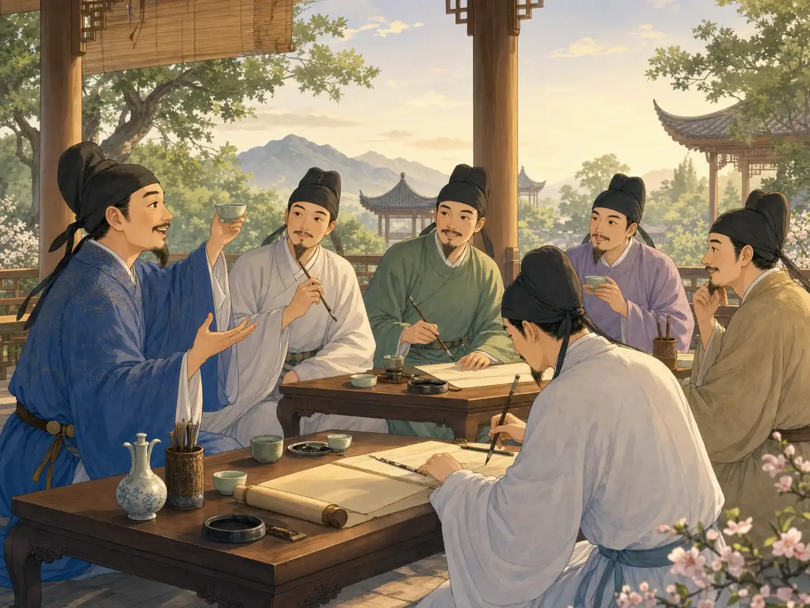
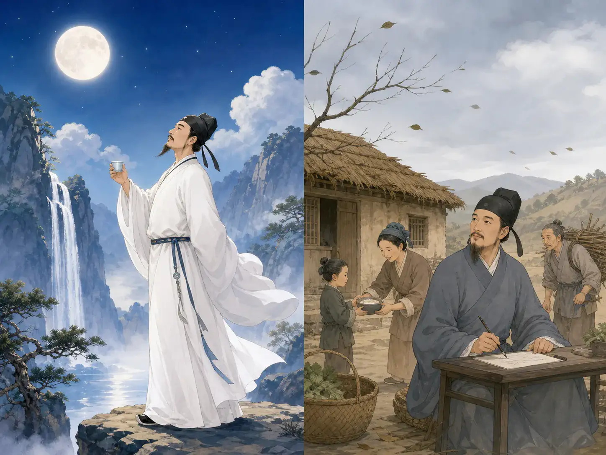
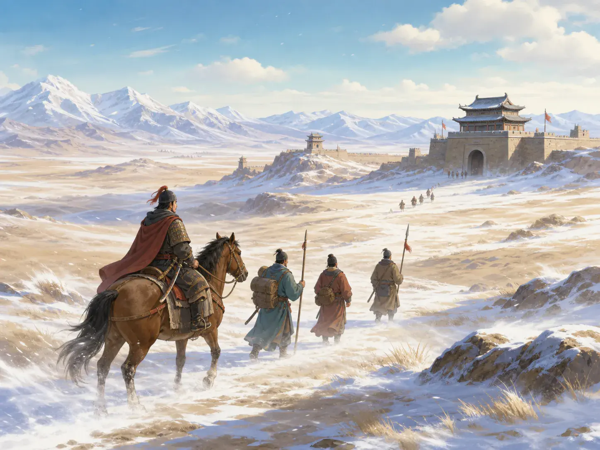

唐诗：读一首诗，看见一幅画
Tang Poems: Read a Poem, See a Picture
Page 1
第一幅画：雪地里，谁还在钓鱼？
Picture One: Who Is Still Fishing in the Snow?
No birds in the mountains. No travelers on the paths. Yet one small boat is still on the snowy river.
一千多年前的Táng cháo · 618年至907年的中国朝代。，诗人会写雪、月亮、朋友、破掉的屋顶，还有离家很远的路。我们先从最安静的一幅画开始。
唐朝诗人柳宗元只用二十个字，就写出了一整片冬日雪景。这首诗叫《江雪》。先别急着“分析”，看看它怎样把镜头一步一步拉近。
第一句：千山鸟飞绝 - 一座座山上，看不见一只飞鸟。第二句：万径人踪灭 - 一条条路上，看不见一个行人。
第三句：孤舟蓑笠翁 - 只有一只小船。船上坐着一个穿蓑衣、戴斗笠的老人。第四句：独钓寒江雪 - 他独自在飘雪的冷江上钓鱼。
“千山”和“万径”不是要我们真的数山和路。它们让眼前的空旷变得大极了。前两句把飞鸟和行人都移出画面，后两句才让小船和老人出现。他觉得孤单吗？他很平静吗？还是他偏偏不肯被一场大雪赶回家？诗没有替我们回答。这正是它好玩的地方。
More than 1,000 years ago, during China's Táng cháo · 唐朝 · The Chinese dynasty that lasted from 618 to 907., poets wrote about snow, moonlight, friends, broken roofs, and roads far from home. Let us begin with the quietest picture of all.
One Tang poet, Liu Zongyuan, created an entire winter scene with only twenty Chinese characters. His poem is called River Snow. Watch how it begins far away, then moves closer.
Line 1: 千山鸟飞绝 - Across the mountains, not a single bird is flying. Line 2: 万径人踪灭 - Along all the paths, not one traveler can be seen.
Line 3: 孤舟蓑笠翁 - In one small boat sits an old man in a straw cape and hat. Line 4: 独钓寒江雪 - Alone, he fishes on the cold river as snow falls.
The poem does not really ask us to count a thousand mountains or ten thousand paths. Those big numbers make the empty view feel enormous. First, every bird and traveler disappears. Then one boat and one fisherman come into view. Is the fisherman lonely? Peaceful? Or simply too stubborn to let a snowstorm send him home? The poem does not answer for us. That is part of the fun.
Page 2
第二幅画：一场有诗的聚会
Picture Two: A Party with Poems

Friends talk over cups of wine and wait to hear the next good line.
这幅图看起来像一场聚会，因为它就是一场聚会。有酒有菜，有音乐和聊天。有些聚会上还会有人出题、选韵，大家当场作诗。一句写得特别妙，旁边的人可能会拍手叫好。
所以，唐朝人不是因为“不唱歌”才都去写诗。他们当然唱歌，有些诗后来也会配上曲子唱。对读书人来说，诗还有别的用处：从七世纪后期开始，进士考试会考作诗。诗写得好，也可能让朋友、主人和有名望的人记住你。
不过，有些诗被写下来，只是因为一句平常的“再见”实在不够。有一次，诗人王维的一位朋友要去遥远的西方。王维写下了《送元二使安西》：渭城朝雨浥轻尘，客舍青青柳色新。劝君更尽一杯酒，西出阳关无故人。
清晨的小雨打湿了路上的尘土，旅店旁的柳树变得青翠。朋友就要出发了，王维没有说一大篇话，只请他再喝一杯。后来，这首送别诗真的被人唱成了歌。诗和歌从来不是两支互不来往的队伍。
This picture looks like a party because it is one. There is food, wine, music, and conversation. At some gatherings, people also made poems on the spot. Someone might choose a rhyme. Someone else would pick up a brush. A wonderful line could make the whole table cheer.
So no, people in the Tang dynasty did not write poems because they had no songs. They sang plenty of songs, and some poems were set to music. Poetry had other uses too. From the late 600s onward, an important exam for men who hoped to work for the emperor included writing a poem. Writing poems also let educated people show their skill to one another.
But sometimes a poem was written because an ordinary goodbye did not feel like enough. The poet Wang Wei once had to say goodbye to a friend who was leaving for a distant place in the west. He wrote: Morning rain settles the dust on the road. Beside the inn, the willows shine fresh and green. My friend, have one more cup with me. Beyond Yang Pass, you will find no old friends.
Wang Wei did not give his friend a long speech. He simply asked him to stay for one more cup. Later, people really did sing this farewell poem as a song. Poetry and music were never on opposite teams.
Page 3
第三幅画：月亮来了，屋顶飞了
Picture Three: The Moon Arrives, and the Roof Flies Away

Li Bai invites the moon for a drink, while an autumn wind tears the straw from Du Fu's roof.
Lǐ Bái · 唐代诗人，以豪放的想象和月亮、旅行等题材闻名。和Dù Fǔ · 唐代诗人，许多诗记录了战乱和普通人的生活。是朋友，也是唐朝最有名的两位诗人。他们都写过许多种诗，不过下面这两个瞬间，刚好能让我们看见他们的诗有多么不同。
李白一个人坐在月下喝酒，听起来有点冷清。可是他一抬杯，奇妙的事情发生了：
举杯邀明月，对影成三人。
他把月亮请来，又把自己的影子算进去。一眨眼，一个人的夜晚变成了三个人的聚会：一位诗人，一轮月亮，还有一个怎么赶也赶不走的影子。
杜甫遇到的却不是安静的月夜。一个秋天，大风卷走了他茅屋上的草，雨又漏进屋里，全家冷得睡不着。他本来可以只说：“我真需要一间结实的屋子。”可他想到的却是所有挨冻的人：
安得广厦千万间，大庇天下寒士俱欢颜。
他盼望有千千万万间结实的屋子，让每个受冻的人都能住进去，露出笑脸。李白请月亮来陪自己，杜甫的屋顶飞了，却还在惦记别人的屋顶。诗可以跳进想象里，也可以把心伸向别人。
Lǐ Bái · 李白 · A Tang poet known for bold imagination, moonlight, and travel. and Dù Fǔ · 杜甫 · A Tang poet whose work records war, hardship, family, and everyday life. were friends, and they became two of the most famous Tang poets. Both wrote many kinds of poems, but these two moments show just how different poems can feel.
Li Bai is sitting alone under the moon with a cup of wine. That sounds quiet until he lifts his cup and something magical happens: I lift my cup and invite the bright moon. With my shadow, now we are three.
Suddenly, one person's evening becomes the strangest little party: one poet, one moon, and one shadow that follows everywhere.
Du Fu had a very different night. One autumn, a strong wind tore the straw from his roof. Then rain leaked inside. His family was cold and could not sleep. He could have ended his poem by saying, “I need a stronger house.” Instead, he thought of everyone who had no warm home:
If only there were thousands of strong houses, sheltering everyone who is cold and poor, and making them smile.
Li Bai invites the moon to keep him company. Du Fu loses his own roof and worries about other people's roofs. One poem leaps into imagination. The other reaches out with care.
Page 4
第四幅画：大雪怎么变成了梨花？
Picture Four: How Did Snow Become Pear Blossoms?

On the Tang frontier in the far northwest, snow could turn roads, forts, and riders white.
唐朝的西北边地离都城很远。那里有沙漠、高山、堡垒，也有刺骨的寒风。岑参就曾在这样的地方生活。他熟悉那里的风雪。一次，他送朋友回都城，朋友还没出发，大雪已经盖住了前面的路。
北风卷地白草折，胡天八月即飞雪。
北风扫过地面，把干草都吹折了。秋天才到，雪已经从天上落了下来。
接着，岑参再看了一眼眼前的大雪：
忽如一夜春风来，千树万树梨花开。
树上当然没有真的开出梨花。白雪盖满枝头，让寒冷的边地忽然像春天一样开满了花。风还在吹，前面的路也依旧被雪盖住。可在骑马的人头顶，每一棵树都像正在开花。
The Tang frontier in the far northwest was a long way from the capital. It had deserts, mountains, forts, and fierce winds. Cen Shen spent time in this faraway land and knew its wild weather. Once, as he said goodbye to a friend who was leaving for the capital, snow buried the road ahead.
The north wind sweeps across the ground and snaps the dry grass. It is only fall, but snow is already coming down.
Then Cen Shen looks at the storm again: It seems as if a spring wind arrived overnight and covered thousands of trees with white pear blossoms.
There are no pear blossoms, of course. Snow has covered every branch, making the frozen land look as if spring arrived in a single night. The wind is still blowing, and the road is still buried. But above the riders, every snowy tree seems to be in bloom.
你记住了哪一幅画？
Which Picture Stayed with You?
合上这一页，看看哪些画面还留在脑海里：大雪中的一个渔翁，朋友出发前的最后一杯酒，被李白请来的月亮，被秋风吹走的屋顶，还有西北边地一夜“开满”的白色梨花。
Táng shī · 唐代创作并流传下来的诗歌。并不都像一个样子。它可以安静、好笑、难过、温暖，也可以忽然变得很狂野。它的字很古老，最好的画面却还是会一下子跳到我们眼前。你最想走进哪一幅？哪一幅你只想躲在暖和的屋子里看？
Close the page and see what remains: one fisherman in the snow, a final cup before a friend leaves, the moon invited to Li Bai's party, a roof torn away by the wind, and a faraway land where snow “blooms” like white pear flowers.
Táng shī · 唐诗 · Poetry written during the Tang dynasty. do not all sound alike. They can be still, funny, sad, warm, or suddenly wild. Their words are old, but their best pictures still appear in a flash. Which picture would you step into? Which one would you rather watch from somewhere warm?